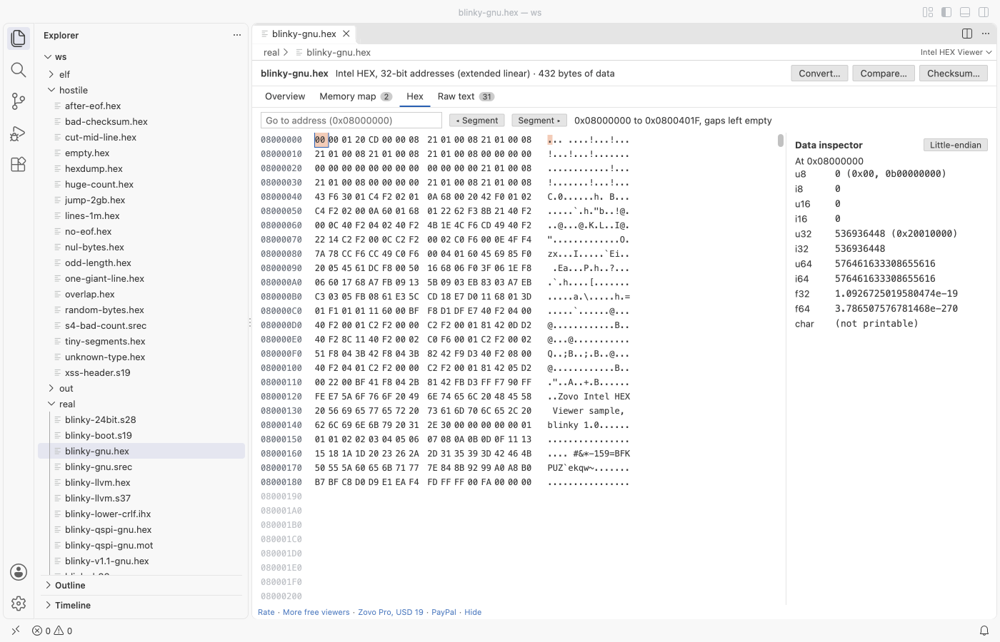

Open files in VS Code and Cursor / Binary, network and hardware
Compute a CRC over an address range of a firmware image
A bootloader often checks a CRC over the application area, and the value must be computed with the same algorithm, range and fill byte for gaps. Intel HEX Viewer opens the firmware image in VS Code and shows its segments and gaps for free. Its Checksum tool computes CRC-32, CRC-32/MPEG-2, CRC-16/CCITT-FALSE, XMODEM, MODBUS, 8 and 16-bit sums, MD5 or SHA-256 over the range you type, and can write the value into a copy of the file. Checksum is part of Zovo Pro (USD 19 once), with 3 free tries.
Free, MIT license. Extension ID zovo.zovo-intel-hex-viewer, version 0.1.1. Needs VS Code 1.90.0 or newer.

Steps in VS Code
- Install Intel HEX Viewer from the Marketplace, or press Ctrl+P (Cmd+P on macOS) and run
ext install zovo.zovo-intel-hex-viewer. - Right-click the
.hexfile in the Explorer and pick "Open in Intel HEX Viewer". S-record files open in the viewer when you click them. - Open the Memory map tab and note the first and last address of the area your bootloader checks, such as
0x08000000to0x0801FFFB. - Click Checksum... and pick the algorithm, such as CRC-32 (zlib, Ethernet, PNG) or CRC-16/CCITT-FALSE.
- Type the first and last address and the fill byte for gaps, which is 0xFF by default, then click Calculate.
- Read the value and click Copy. The line under it gives the number of bytes and how many gap bytes were counted as the fill byte. To store the value, type an address, pick the byte order and use the button "Save a copy with the value...".
Where Zovo Pro saves time
The memory map, the Problems tab with every bad line, the hex view by address and the data inspector are free, with no limit and no sign-in. You can read a stored CRC at its address in the hex view for free. The viewer never changes the file you opened.
Writing a CRC script for every board means guessing the polynomial, the range and how gaps count. Checksum or CRC over an address range takes the range and the fill byte, names most algorithms with their polynomial and start value, and says how many gap bytes it counted. It can save a copy of the image with the value written at an address you pick, little-endian or big-endian. The other Pro tools convert to Intel HEX, S-record or binary and compare two images by address.
With Checksum or CRC over an address range (Zovo Pro)
- Click Checksum... at the top of the viewer, or run "Intel HEX Viewer: Checksum or CRC over an address range (Pro)" from the Command Palette.
- Pick the algorithm, the range and the fill byte, and click Calculate. A try counts when the value shows.
- To store it, type the address and the byte order, and use "Save a copy with the value...". The new file is written where you pick.
Checksum or CRC over an address range works 3 times on your computer before it asks for a license, and a try counts only when you get a result. Opening a file shows no popup and no countdown.
Zovo Pro costs USD 19 once. It is not a subscription, and it turns on the Pro tools in every Zovo extension, not only Intel HEX Viewer. After a card payment (Stripe) your license key shows on the next page. In VS Code, run "Zovo Pro: Enter Zovo Pro license key" from the Command Palette and paste it. The key is checked on your computer, with no network call. With GitHub Sponsors, pick the "$19 one time" tier, then run "Zovo Pro: I already paid: unlock with GitHub Sponsors" and sign in with the same GitHub account. With PayPal, send USD 19 with "Zovo Pro" in the note and the key comes by email within a day.
A team of 5: USD 59 once, by card or by PayPal. Every rule and every Pro tool is on the Zovo Pro page.
Steps in Cursor, Windsurf or VSCodium
- Open the Extensions view with Ctrl+Shift+X (Cmd+Shift+X on macOS).
- Search for
zovo.zovo-intel-hex-viewerand click Install. Cursor, Windsurf and VSCodium install from Open VSX, where it is published aszovo/zovo-intel-hex-viewer. - If your editor has no gallery, download the .vsix from the Open VSX page and run "Extensions: Install from VSIX...".
- Then use it the same way as in VS Code.
What Intel HEX Viewer handles
- CRC-32 (zlib), CRC-32/MPEG-2, CRC-16/CCITT-FALSE, CRC-16/XMODEM and CRC-16/MODBUS.
- Sum of bytes 8-bit, its two's complement, and sum of bytes 16-bit.
- MD5 and SHA-256 over the same range.
- Intel HEX and S-record files, with gaps counted as the fill byte you set.
What it does not do
- Only the listed algorithms. You cannot set a custom polynomial, start value or final XOR.
- The range can be up to 1 GB of addresses.
- The value is computed over the bytes as stored. If your bootloader skips the CRC word inside the range, end the range before it.
Other options
- SRecord. Free command-line tools.
srec_catcan fill gaps, compute a CRC-16 or CRC-32 and write it into the image, set up on the command line. - intelhex for Python. A free Python package that reads HEX files.
zlib.crc32on the bytes of your range gives the CRC-32.
Install counts and Open VSX status were checked on 13 November 2026. Descriptions in quotes are the extensions' own.
Questions
Why does my CRC not match the bootloader?
Check three things. The algorithm must be the same, as CRC-32 and CRC-32/MPEG-2 give different values for the same bytes. The range must be the same. Gaps must count as the same fill byte, usually 0xFF for erased flash.
Is the last address included?
Yes. The range runs from the first address to the last address you type, both included.
Can I check the CRC of a .bin file?
Not in this viewer. Hex Viewer opens .bin files and has a Checksums tool for a selection or a file.
Does it work in Cursor or Windsurf?
Yes. Cursor, Windsurf and VSCodium install extensions from Open VSX. Search for the extension in their Extensions view and install it there.
More about Intel HEX Viewer
Read the Intel HEX Viewer page for every feature and setting, or the source code on GitHub.
Related guides
- See what an Intel HEX or S19 file puts in memory
- Compare two .hex or .s19 firmware images by address
- Find checksum errors and bad records in an Intel HEX file
- Convert an Intel HEX file to a flat binary
Zovo Pro and support
Zovo Pro: USD 19 once, every Zovo viewer. It turns on the Pro tools in this extension and in the other Zovo extensions you use. The free features stay free.
After a card payment your license key shows on the next page. Paste it with the command "Zovo Pro: Enter a key".
You can also support the work with no Pro:
Need your format supported?
Open a format request with a sample file, and I reply there whether it can be done. For USD 299 once, through this GitHub Sponsors tier, I add your file format or a missing feature to this extension, with tests, within 7 days.